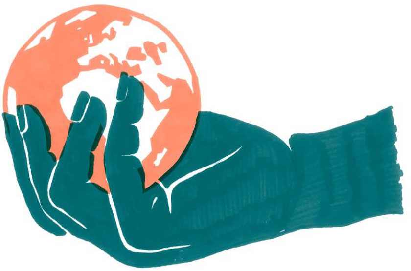

Zahraniční inspirace
V rámci Klimavize jsme také uspořádali dva veřejné webináře, při kterých jsme vedli strategické debaty s lidmi ze zahraničních hnutí. První polovina byla vždy věnovaná panelové diskuzi a druhá část sloužila k diskuzi a reflexi témat v rámci českého klimatického hnutí. Při debatách jsme se zaměřili na struktury zahraničních hnutí, způsoby strategických plánování a sdílení zkušeností. V této kapitole vám pro inspiraci shrnujeme obsah webinářů v textové podobě.
Strategická práce v Sunrise Movement
Na první setkání jsme pozvali zástupkyně Sunrise Movement (hnutí Sunrise) Molly Morabito a Avu Mohsenin, které nám představily strategii svého hnutí. Sunrise Movement je klimatické hnutí hlavně mladých lidí v USA, jež se začalo formovat v roce 2015 a jeho klíčovým požadavkem je prosazení Nové zelené dohody (Green New Deal) a propojení řešení změn klimatu s vytvořením zelených, důstojných pracovních míst.
Za úspěchy hnutí přitom stojí detailně promyšlená strategie – takzvaná teorie změny – na několik let dopředu. Zakládající skupina hnutí, pocházející původně z prostředí studentských iniciativ za stažení investic univerzit z fosilního průmyslu (divestment), totiž strávila před spuštěním organizace celých devět měsíců intenzivním designováním budoucího hnutí včetně jeho strategie, struktur, principů vnitřní kultury i komunikačního narativu; a také předběžným vychytáváním jejich možných problémů (frontloading).
Teorie změny hnutí Sunrise stojí na třech pilířích. Prvním je společenská moc, tedy silná a hlasitá aktivní podpora ze strany společnosti. Ta se vytváří pomocí přímých akcí, které mohou mít podobu masových demonstrací nebo blokád. Tuto část strategie nazývají eskalací a na ni navazuje absorpce: po přímých akcích a mediální pozornosti existuje plán, jak do hnutí zapojit okamžitě nové lidi, například skrze tréninky navazující na akce.
Druhým pilířem je politická moc. Silné hnutí vytváří tlak na politiky v rozhodujících pozicích a může ovlivnit, jaké politiky projdou, a jaké naopak ne. Podporují zvolení kandidátů či kandidátek, kteří prosazují politiku Green New Deal na lokální, státní i národní úrovni a kteří se ztotožňují s hodnotami hnutí. Sunrise jim může zároveň pomoci vyhrát ve volbách, například organizováním kampaně. Tato podpora je podmíněna heslem „žádná trvalá přátelství, žádná trvalá nepřátelství“, které je důležité pro strategii hnutí Sunrise. Odkazuje k tomu, že podpora politiků a političek není nepodmíněná a ve chvíli, kdy by přestali prosazovat Green New Deal nebo hodnoty hnutí, nemohou čekat od hnutí další podporu.
Třetím pilířem je politická hegemonie, která odkazuje k propojení politické a sociální moci a k vytváření nového „common sense“ – nového společenského programu postaveného na sdílených vizích a hodnotách. To může vypadat například tak, že Sunrise propojuje boje za pracovní místa s bojem za dostupnou zdravotní péči nebo za dostupné vzdělání bez rizika pádu do dluhové pasti.
Hnutí má celistvou strategii, díky níž může mít velký vliv na prosazování politik na celonárodní úrovni. Struktura hnutí je ale decentralizovaná (hnutí má přes čtyři stovky místních skupin) a místní skupiny přizpůsobují dílčí taktiky specifickému kontextu, který se v různých státech liší. Aby mezi místními skupinami probíhala dobrá komunikace a akce se děly v souladu se strategií, existuje koordinační skupina.
Inspirativní pro české klimatické hnutí může být i důraz na posilování vůdčích rolí v kolektivu. Sunrise tento princip charakterizuje slovy „step up, step back“, podporuje tedy jednotlivce, aby byli iniciativní v přebírání odpovědnosti a vůdčích rolí. Podporou je myšleno i vzdělávání a sdílení zkušeností, které umožní stát se lídry či lídryněmi i méně zkušeným lidem. Step back potom znamená krok zpět, který po určitém časovém období umožní zhostit se vůdčí role někomu jinému. Hnutí tedy ve své struktuře není nehierarchické, ale podporuje své členstvo k rozvoji vůdčích schopností a zároveň v těchto rolích zajišťuje výměnu.
Strategie hnutí Sunrise na konkrétní úrovni může vypadat následovně: hnutí vytvoří momentum koordinovanými přímými akcemi, které jsou nenásilné, inkluzivní a jasně komunikují požadavky hnutí Sunrise. Akce jsou plánovány kolem aktuálních témat, jež jsou viditelná ve veřejném prostoru. V přímé návaznosti na tyto akce probíhá nábor nových lidí, jejich trénink (například ve strategickém uvažování nebo v oblasti médií a komunikace) a jejich zapojení do stávajících struktur hnutí. Efektivní taktikou pro nábor nových lidí je také komunikace jeden na jednoho, kdy je kladen důraz na individuální oslovování nových členů a členek a jejich zapojení.
Dalším krokem je vyhledávání politiků a političek, kteří hnutí podpoří, jak na lokální, tak na celonárodní úrovni – klíčová je jejich podpora politiky Green New Deal. Poté začnou jednotlivé skupiny pracovat na kampani pro tyto politiky a političky: organizují například hromadné volání voličům a voličkám nebo door to door kampaň, zajistí komunikační podporu atd. Když politik či politička získá moc, hnutí je sleduje a tlačí na to, aby prosazovali navrhované politiky, a pokud se to neděje, hnutí má moc zasadit se o to, aby už znovu nebyli zvoleni. (Je ovšem nutno dodat, že tato strategie je designovaná pro politický systém USA, a není tedy do našeho prostředí zcela přenositelná.)
Sunrise Movement čelí v aktuální politické situaci v USA určitým limitům své dosavadní strategie – je schopné dostat své požadavky do veřejné debaty, ale jejich prosazení blokuje centristická blokační menšina v kongresu – a prodělává aktuálně interní debaty o dalším postupu. Jisté ale je, že jeho metodický přístup k organizování, spojující protestní eskalaci s dlouhodobým budováním struktur a mobilizaci zdola s promyšlenou jednotnou strategií, přinesl klimatickému hnutí dosud netušenou politickou moc.
Strategické debaty v německém klimatickém hnutí
Druhým webinářem, který jsme v rámci Klimavize pořádali, byla diskuze o strategiích klimatického hnutí v Německu. Debatovala s námi Antje van Broock, ředitelka tradiční ekologické organizace BUND (německých Přátel Země), a Daniel Hofinger z kolektivu AusgeCO2hlt, který je klíčovou součástí hnutí občanské neposlušnosti proti těžbě fosilních paliv Ende Gelände.
Německý BUND je s bezmála půlmilionovou členskou základnou jednou z nejstarších a největších ekologických organizací na světě. Spojuje síť spíše „ochranářských“ místních buněk se silnými národními a zemskými centry, které jsou schopné klasickými metodami advokační práce, jako je výzkum a lobbing, a mobilizace veřejnosti prostřednictvím petic či demonstrací výrazně ovlivňovat regionální i národní politiku. Ende Gelände je naopak novým fenoménem. Decentralizovaná koalice menších radikálních skupin za klimatickou spravedlnost se vyvinula z tradice pořádání letních „klimakempů“, které již dříve organizoval kolektiv AusgeCO2hlt. Od roku 2015 se zaměřuje na konkrétní taktiku: pořádání masových akcí občanské neposlušnosti, při kterých tisíce lidí vlastními těly blokují těžbu a spalování hnědého uhlí, v jehož těžbě patří Německo k smutným světovým rekordmanům.

Obě uskupení mají velmi odlišné teorie změny, strategické profily a do jisté míry i ideové založení. BUND je klasickou ekologickou organizací, která využívá legální, advokační a mobilizační prostředky. Soustředí se na mobilizaci podpory veřejnosti s cílem přesvědčit držitele moci – vládu a byznys – ke kompromisům. A jeho základnu tvoří často i poměrně konzervativně orientované členstvo zaměřené na lokální ochranu přírody.
AusgeCO2hlt a na něj navazující uskupení Ende Gelände jsou hnutí zaměřená na přímé akce. Využívají masové blokády, kterými přímo konfrontují příčiny klimatické krize a komplikují fosilnímu průmyslu provoz. Zakládají se spíše na aktivitě radikálů z větších měst. Přesto lze říci, že oba proudy, které tyto organizace reprezentují, přispěly po svém výrazným dílem ke společnému cíli – urychlení odklonu Německa od uhlí. A podařilo se jim to mimo jiné právě plněním svébytných rolí v rámci určité implicitní „dělby práce“.
Zatímco BUND vyjednával v politické sféře, radikálové obsazovali doly a nekompromisně žádali „konec uhlí hned“. „Vyjednavači“ se tak mohli „opřít“ o radikálnější křídlo, díky němuž dříve ambiciózní požadavky na rychlý konec uhlí náhle působily jako kompromis. Vztah obou křídel přitom nebyl bez pnutí, třenic či konfliktů, zvláště v době jednání vládní uhelné komise, v níž ekologické organizace kontroverzně přistoupily na rok 2038 (k nelibosti důsledných radikálů). Rozmíšky se ale vždy dařilo držet na úrovni interní debaty a navenek se naopak důsledně udržovala „jednotná fronta“, každoročně potvrzovaná „solidárním prohlášením“, jímž velké ekologické organizace dávaly najevo svůj souhlas s cíli blokád, a implicitně jim tak poskytovaly legitimitu a ochranu před státní represí.
Příkladem takové dělby práce bylo i dění kolem Hambašského lesa, který se stal v roce 2018 ohniskem sporu o uhlí v německé společnosti. Zatímco „radikálové“ bránili les ohrožený rozšiřováním uhelného lomu vlastními těly, oddalovali tak jeho destrukci a dostávali ničení přírody kvůli těžbě každý večer do hlavních zpráv, právě BUND byl v takto získaném čase schopen vybojovat u soudu verdikt, který kácení lesa zastavil. Tato „jednota v různosti“ je dnes podle zástupkyň obou proudů nakonec právě tím, co přineslo společný úspěch. Umírnění oceňují schopnost radikálních hnutí posouvat hranice možného směrem k tomu, co je potřeba. A radikálové zase schopnost umírněných prosadit v rámci systému to, co je aktuálně dosažitelné.
Na hambašské protesty navázaly milionové mobilizace hnutí Fridays for Future v ulicích všech německých měst. Jejich požadavky se pak podařilo dotlačit za brankovou čáru po volbách v roce 2021, v nichž se klimatická krize po ničivých povodních stala jedním z klíčových témat, která stála volební vítězství křesťanské demokraty, vedené „prouhelným“ Arminem Laschetem. Nová vláda s účastí Zelených následně slíbila urychlit konec uhlí už do roku 2030.
Německé klimatické hnutí však čekají v nové době nové výzvy: jak zabránit tomu, aby Německo přešlo z uhlí na neméně škodlivý plyn? Jak hlídat aspekt spravedlnosti v ekologické transformaci s vládou opřenou mimo jiné o neoliberální svobodné demokraty? Jak najít ve společnosti nové spojence pro důslednější transformaci v odvětvích, jako je doprava či sektor budov? A jak se vypořádat s růstovou dynamikou ekonomiky, která prohlubuje i další ekologické krize? Těmto výzvám však čelí hnutí silnější než kdy dříve, a to mimo jiné i díky své plodné pluralitě.